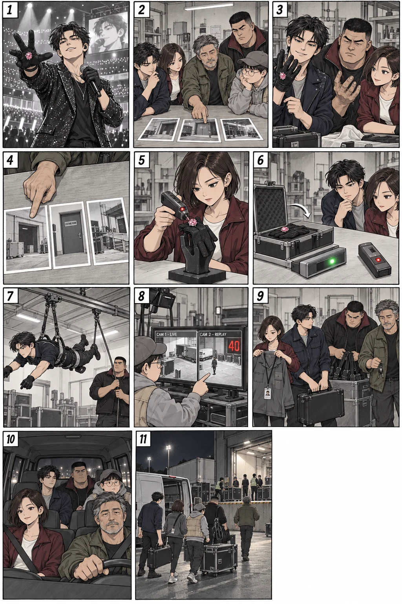
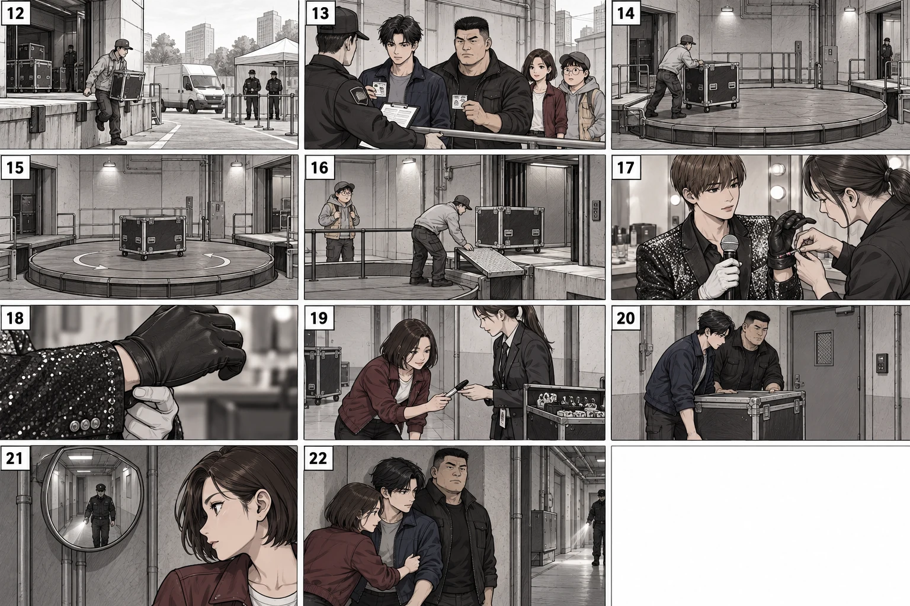
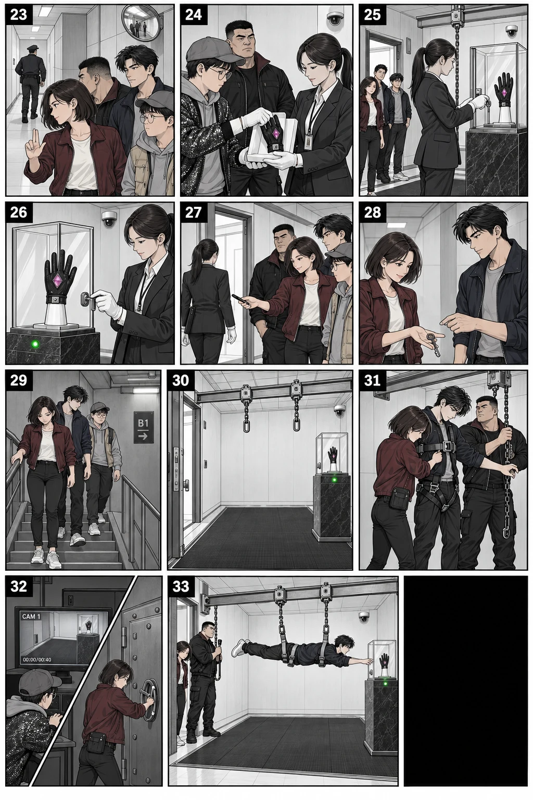
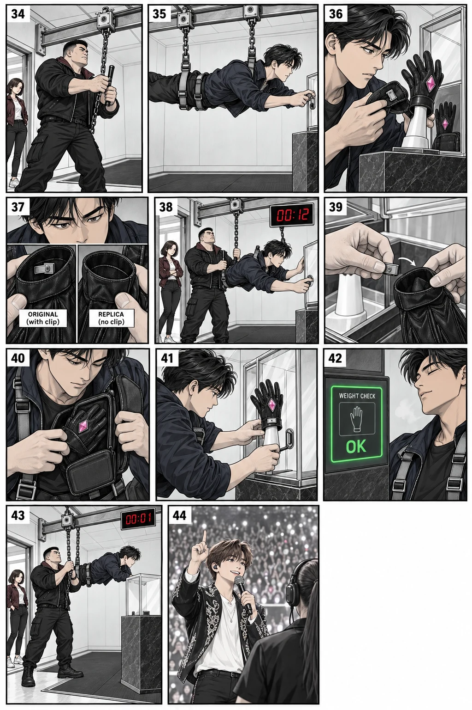
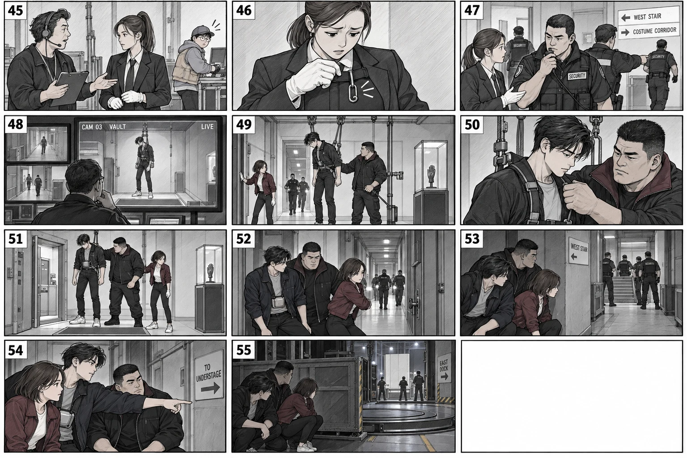
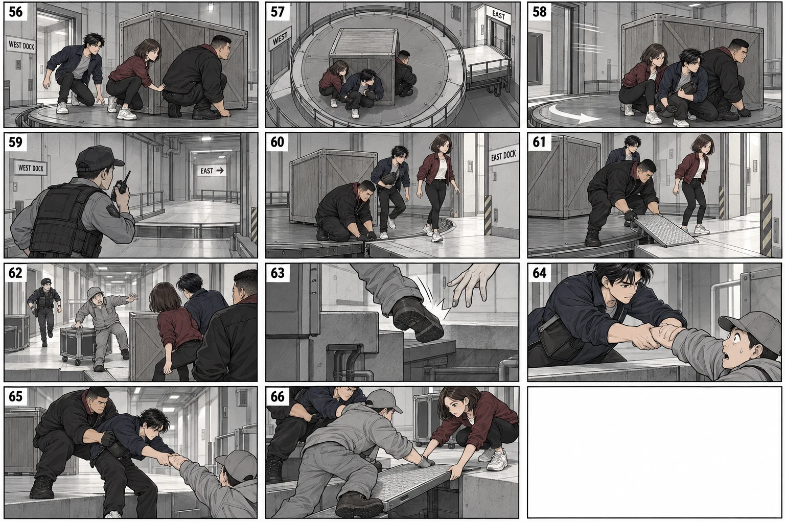
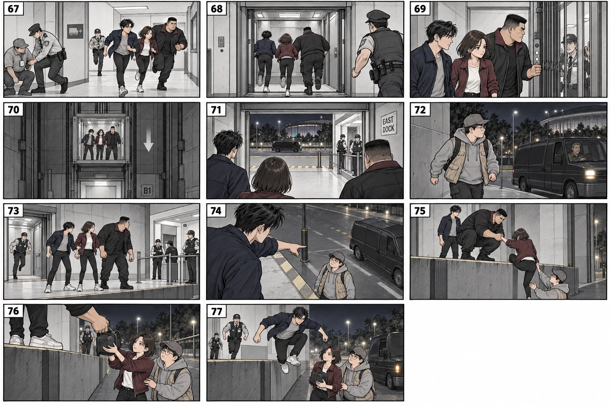
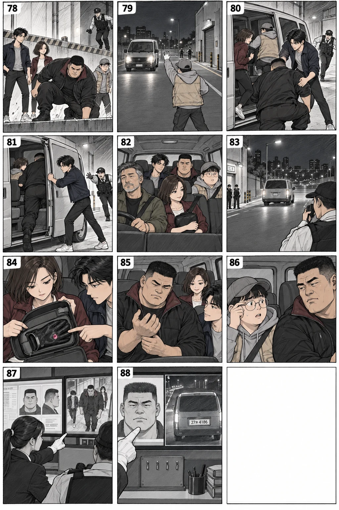

인양·회수
가슴·골반 두 지지점, 닫힌 천장 레일, 원타치의 제어, 안전 구획 착지를 컷으로 분리했다. 첫 시안의 가슴 지지 누락·회수 순간이동·감지 바닥에 걸친 발은 반려하고 고쳤다.
웹툰 읽기 · 22개 원화 페이지 · 3작품 비교 근거
가슴·골반 두 지지점, 닫힌 천장 레일, 원타치의 제어, 안전 구획 착지를 컷으로 분리했다. 첫 시안의 가슴 지지 누락·회수 순간이동·감지 바닥에 걸친 발은 반려하고 고쳤다.
정상 카드 인증과 보관함 키를 구분했다. 정상 보관 후에만 키 고리를 훔친다. 클립은 손목 안쪽에서 복제품 안쪽으로 옮기며 진품은 보호 파우치에 넣는다. 추가 장갑·분리된 보석·바깥 클립·닫힌 유리를 통과한 손을 수정했다.
검사 통과 후 앙코르 요청, 빈 키 고리 발견, 신고, 영상 확인으로 원인을 연결했다. 경비는 계단을 나눠 막고 동쪽으로 우회하며 추적을 계속한다. 화면 한 대의40초 재생은 작품 내 가상 장치이며 기발함 자체로 점수 주지 않았다.
정지 때 승차·회전·반대편 정지·발판을 놓은 뒤 하차한다. 공중에 뜬 발판과 뒤바뀐 하차 순서를 재작업했다. 구조 대상은 외부에 있는 뻐꾸기와 다른 직원으로 고쳤다. 원타치의 신체 지지와 딱지의 발판으로 체중을 바닥으로 옮긴다.
콘티에서 이동 방향을 정리해 서비스 계단으로2F에 접근하고 승강대로1F 하역장에 내려온다. 지하 표기와 외부 도로의 충돌을 제거했다. 낮은 하역장 앞면과 검문이 있는 보행 출구를 분리하고, 딱지는 스스로 내려온 뒤 파우치를 먼저 받는다.
대사는 컷 안에 배치했다. 무전은 각진 풍선과 별도 장면으로 출처를 구분했다. 딱지가 모르는 클립을 이미 아는 듯 말하던 대사를 질문과 답으로 고쳤다. 아직 사지 않은 치킨이 손에 생긴 오류도 제거했다. 다섯 명이 차에 탄 뒤 기록이 추적 단서로 남는다.
88개 서사 컷과 소형 삽입 연출을 유지했다. 도입·구조·착지3컷을 세로 구도로 다시 그려 기존 같은 순간을 대체했다. 원화 파일은 유지하고 브라우저 표시 영역으로 중복 컷을 제외해 조판했다.
실제 이미지의 동작·읽는 순서·인물·소품과 연결을 편집적으로 검토했다. 실제 독자 조사, 흥행·1위 보장, 장비의 공학적 인증을 했다는 뜻은 아니다. 재치의 핵심은 클립 자력 해결과 이미 본 작업 동선의 재사용이며, 향후 실제 독자 반응에 따라 속도와 대사는 더 다듬을 수 있다.
컷별 대본·제작 지시 · 페이지별 실제 검토 기록 · 선택 자산·88컷 배분·해시 · 조판·공개 웹 검수 · 생성·수정 프롬프트 전체
아래는 제작 과정의 원본입니다. 일부 인물·장갑·발판·높이 오류가 남아 있어 최종 콘티로 채택하지 않은 그림도 포함합니다. 완성본은 위 웹툰과 원화 페이지입니다.







